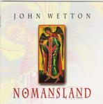

| Artist: | John Wetton |
| Title: | No Mans Land |
| Label: | Giant Electric Pea GEPCD 1025 |
| Length(s): | 67.30 minutes |
| Year(s) of release: | 1999 |
| Month of review: | 04/2000 |
| 1) | Intro - Guitar Concerto | |
| 2) | The Last Thing On My Mind | 4.59 |
| 3) | Sole Survivor | 6.50 |
| 4) | Book Of Saturday | 3.03 |
| 5) | Emma | 3.19 |
| 6) | Tatras | 5.00 |
| 7) | In The Dead Of Night | 5.56 |
| 8) | Bygosh!! | |
| 9) | Easy Money | 10.28 |
| 10) | Rendezvous 6:02 | 5.23 |
| 11) | The Birth Of Igor | 3.10 |
| 12) | After All | 4.34 |
| 13) | Starless | 10.17 |
| 14) | The Night Watch | 4.25 |